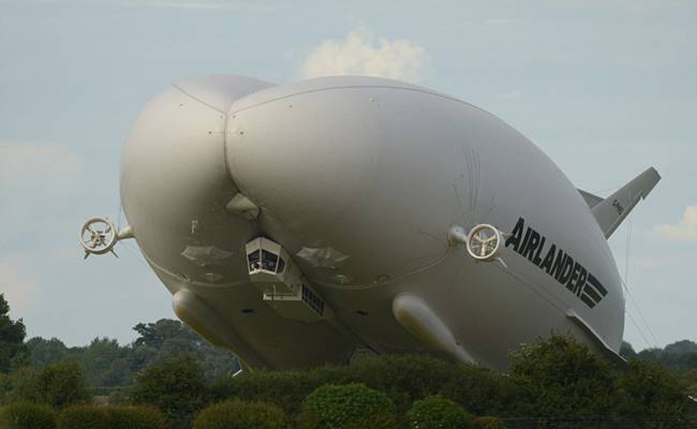

推荐
视频
热点
娱乐
体育
南京
社会
财经
科技
汽车
图片
搞笑
军事
历史
情感
高考
国际
今日要闻

中国与巴拿马建交
僧侣手工割麦子
闺蜜式母女的奇幻大冒险
歼20罕见大编队震撼曝光
“大屁股”飞机，试飞成功
习近平为国足发展指明“踢法”
42所“双一流”大学名单出炉？教育部回应
美众议院通过草案鼓励台美官员互访 蔡英文高调示谢
老人强抢解锁共享单车：停我家门口就是我的
反转！特朗普宣布取消与古巴单方面协定
日媒感慨中国手机发展：所有人都在刷屏见所未见
14所中管高校巡视结果公布 一些表述别有意味
美军驱逐舰日本海域与货轮相撞 军舰中右侧严重损坏
中国海军司令晤美太平洋舰队司令 谈南海问题
“背大学生淌水”的保洁阿姨：是我们强行背的